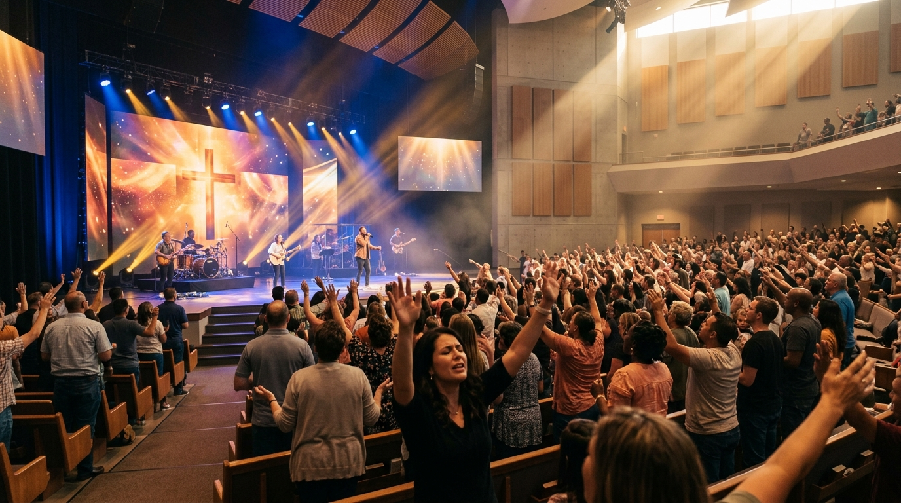
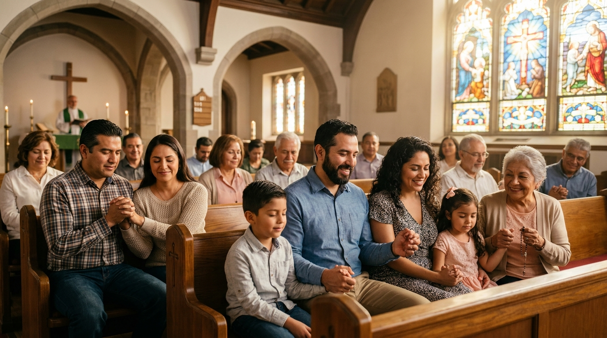
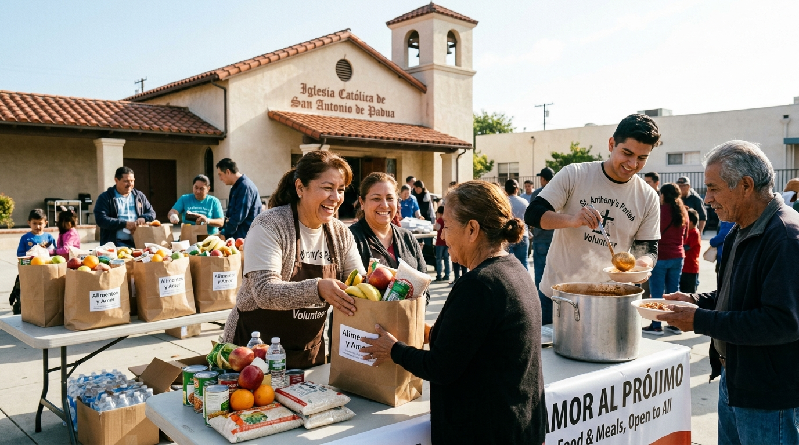

“Un hogar espiritual de esperanza, adoración y verdad para tu familia”
IGLESIA CRISTIANA SOL DE JUSTICIA
“Mas a vosotros los que teméis mi nombre, nacerá el Sol de justicia, y en sus alas traerá salvación; y saldréis, y saltaréis como becerros de la manada.”
— Malaquías 4:2 (RVR1960)Liderazgo Pastoral
“Nuestra misión en Santo Domingo es guiarte al conocimiento pleno de Cristo y su gracia salvadora.”
¿Primera vez en Santo Domingo?
Hay un lugar reservado para ti
En la Iglesia Cristiana Sol de Justicia en Santo Domingo, República Dominicana, creemos que cada familia es especial para Dios. Te invitamos a acompañarnos este domingo para experimentar adoración sincera, predicación bíblica y una comunidad fraternal.
Adoración Apasionada
Cultos alegres y reverentes en nuestro auditorio central de Santo Domingo. Ver horarios →
Iglesia Infantil Segura
Clases bíblicas interactivas para niños durante la reunión. Conoce Generación de Luz →
Parqueo y Comodidad
Estacionamiento vigilado y fácil acceso en Santo Domingo. Ver mapa y ruta →
Comunión y Café
Espacio especial para conversar y orar contigo tras el culto. Pide oración aquí →
Qué Creemos en Iglesia Sol de Justicia
Nuestra fe está arraigada exclusivamente en la Santa Palabra de Dios.
Las Sagradas Escrituras
La Biblia es la Palabra inerrante e inspirada por Dios, nuestra máxima autoridad de fe y conducta diaria.
2 Timoteo 3:16-17El Dios Trino
Un solo Dios verdadero y eterno, manifestado en tres personas co-iguales: Padre, Hijo y Espíritu Santo.
Mateo 28:19Jesucristo el Salvador
El Hijo unigénito de Dios, quien murió por nuestros pecados, resucitó con poder y reina a la diestra del Padre.
1 Corintios 15:3-4Salvación por Gracia
El ser humano es salvo por la gracia soberana mediante la fe en Jesús, y no por obras humanas meritorias.
Efesios 2:8-9El Espíritu Santo y Santidad
Mora en todo creyente regenerado, transformando nuestro corazón para vivir en obediencia, fruto y amor.
Gálatas 5:22-25La Gran Comisión
El mandato de predicar el evangelio a toda criatura en Santo Domingo, toda la República Dominicana y el mundo.
Marcos 16:15¿Deseas entregar tu vida a Jesucristo hoy?
Romanos 10:9 declara: “Que si confesares con tu boca que Jesús es el Señor, y creyeres en tu corazón que Dios le levantó de los muertos, serás salvo.” Cristo te ama y tiene un propósito glorioso para ti.
Oración de Entrega
“Señor Jesús, reconozco que he pecado y necesito tu gracia. Creo que moriste por mí en la cruz y resucitaste. Hoy te abro las puertas de mi vida como mi Señor y Salvador. Amén.”
🕊️ ¡Si hiciste esta oración, has comenzado tu nueva vida con Dios!Prédicas y Estudios Bíblicos
Alimento espiritual predicado desde nuestro púlpito en Santo Domingo para el mundo.
El Poder del Sol de Justicia en Tiempos de Incertidumbre
Predicado por: Pastor de la Congregación
Ministerios en Santo Domingo
Espacios de crecimiento espiritual y servicio para toda la familia en República Dominicana.
Generación de Luz
Enseñanza bíblica interactiva, valores cristianos y cuidado para los niños de nuestra comunidad.
Jóvenes de Fuego
Juventud apasionada por la presencia de Dios en Santo Domingo, viviendo en santidad y compartiendo su amor.

Matrimonios Fuertes
Talleres bíblicos y consejería pastoral para fortalecer la unión y armonía en los hogares de la capital.
Alabanza & Artes
Músicos y salmistas consagrados para dirigir la alabanza congregacional con excelencia técnica y espiritual.

Acción Social y Amor
Entrega de alimentos, operativos médicos y ayuda solidaria en sectores vulnerables de Santo Domingo.
Discipulado & Escuela Bíblica
Capacitación teológica y fundamentación doctrinal para líderes y creyentes en Santo Domingo.
Cultos en Santo Domingo & Calendario
Te invitamos a nuestras reuniones presenciales en el Ensanche La Fe, Santo Domingo.
Servicios Semanales en Santo Domingo
Culto Principal de Adoración & Predicación
Nuestra reunión dominical central en Santo Domingo con ministerio para niños. Ver mapa →
Noche de Oración e Intercesión Bíblica
Reunión de clamor por las familias de Santo Domingo y estudio doctrinal. Enviar petición →
Culto de Jóvenes & Adolescentes
Encuentro juvenil lleno de alabanza, dinámicas y sana comunión en Santo Domingo.
Próximos Eventos en Santo Domingo
Vigilia General de Clamor & Avivamiento
Viernes 9:00 PM • Templo Central Santo Domingo
Conferencia de Familias y Matrimonios
Sábado 5:00 PM • Santo Domingo, R.D.
Jornada Médica & Evangelismo Comunitario
Sábado 8:30 AM • Sector Cristo Rey, Santo Domingo
Diezmos, Ofrendas y Donaciones
“Cada uno dé como propuso en su corazón: no con tristeza, ni por necesidad, porque Dios ama al dador alegre.” — 2 Corintios 9:7
Banco de Reservas
Banco Popular Dominicano
Banco BHD
Zelle (Estados Unidos)
Nota: Puedes especificar en el memo de la transferencia: Diezmo, Ofrenda, o Misiones.
Transferencia Bancaria USD
Plataforma de Donación Segura en Línea
Siembra de manera rápida y segura con tarjeta Visa, Mastercard, American Express o PayPal.
Peticiones de Oración en Santo Domingo
“La oración eficaz del justo puede mucho.” — Santiago 5:16. Nuestro equipo pastoral e intercesores oran fielmente por cada necesidad.
Envía tu Motivo de Oración
Muro de Intercesión
Comunidad UnidaÚnete en oración levantando las manos por nuestros hermanos:
“Pido oración por la completa restauración de mi madre en Santo Domingo. Confiamos en el poder sanador de Jesús.”
“Oramos por la paz de nuestro hogar y la dirección de Dios para el nuevo empleo de mis hijos.”
“Pido sabiduría de lo alto para ser testimonio de Cristo en mi universidad en Santo Domingo.”
“Mas a vosotros los que teméis mi nombre, nacerá el Sol de justicia, y en sus alas traerá salvación...”
Ubicación en Santo Domingo & Contacto
Visítanos en nuestras instalaciones en Ensanche La Fe o comunícate directamente con nuestros pastores.
Dirección del Templo Central
Av. Principal #120, Ensanche La Fe, Santo Domingo, Distrito Nacional, República Dominicana.
Atención Pastoral y Consejería
+1 (809) 555-0199 • Lun a Vie: 9:00 AM - 5:00 PM